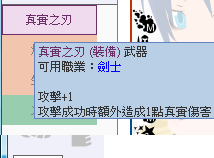
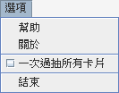

新增：
- 幫所有武器加上武器/防具的標示

- 物防被破壞時會Print Log
- 當一個角色的回合完結後，相應的角色方格會變成灰色（更新了一下沒有角色圖的圖，方便看清楚是彩色還是黑白）
修改：
- 關於角色技能的Log內的角色名稱改為動態產生
- 更改DEBUG按鈕所選擇的角色（請看程式教學->起始畫面）
-
修正魚丸的升龍拳和翻跟斗技能「取消目標選擇視窗時仍然會發動被動技能」的問題
抽牌規則修改： 摸牌階段時，按照先後，每回合每人將（必定）獲得四張手牌
- 增加了選項：可以按一次按鈕就把卡抽完，不必每次每次按

新增角色技能：
- T8的魔賦（一職被動）
- 小城的狂化（一職被動）、後制（一職被動）
、自虐（一職主動）
新增裝備效果：先制之爪、暴走鞋
新增技能卡效果：格鬥拳、戰魂、寒冰術、大治療術、禁言、牢固
- 現在使用技能時會消耗MP，同時會Print Log
可參考小城聯盟Patch Beta 1.4查看技能詳情
檢查一下新按鈕有沒有問題（當初我試了很久偶爾會發現按鈕會出現錯亂之類的…）
裝備和技能效果測試！！！（為了方便大家測試，如果按下技能按鈕後下方對戰紀錄出現Using...Skill!之類的字句代表該技能的功能仍未完成）
以下為已完成的技能：（左方的數字為角色編號）
1. 烏龍茶的所有技能
2. 淋琳的所有技能
3. 古怪的所有技能
4. 地圖的刺殺（一職主動）、妹控（二職被動）、誘惑之歌（二職主動）
5. 鐵皮使的所有技能
6.
魚丸的極限（一職被動）、升龍拳（一職主動）、翻跟斗（一職主動）
7. 白銀劍士的共鳴（一職被動）、冥想（一職主動）
9. 奈奈由宇的邪氣（一職被動）
10. 野味大雄的小城（二職被動，未完成：請見上方已知問題）
11. 山大的防壁（一職主動）、魔凝（二職被動）、合成（二職主動）、分解（二職主動）
12.
七色彩蝶的富貴（二職被動）、揮霍（二職主動）
13. 羽須智行的天資（一職被動）
14. 黑川米古的剛強（一職主動）
15. 勇者謙的人偶（一職主動）
16. 奈特的唱詠（一職主動）
17. 雲的全神貫注（二職主動）
18. 蚊的兔兔！（一職主動）、
休息（二職主動）
19. 曹長的陰謀（一職被動）、發明（一職主動）、賭博（二職主動）
21. 古夢的轉移魔術（一職主動）
22. 怪盜的偷竊（一職主動）
23. 小城的狂化（一職被動）、後制（一職被動）
、自虐（一職主動）
24. 風音之鈴的貓形態（一職被動）、貓化（一職主動）、雜耍（二職被動）
27. T8的所有技能
29. 射手小朋友的藥師（一職被動）、製藥（一職主動）
30.
童貞（一職被動）、激勵（一職主動）
仍然可以幫忙測試過往更新內的過往測試內容
感激不盡！